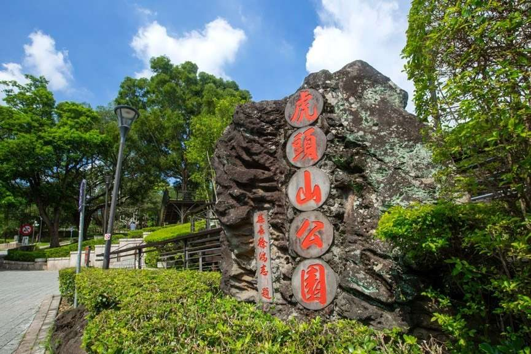
走進桃園，探索城市的文化與魅力
從歷史人文、特色景點、在地美食到人口發展，認識桃園區的多元風貌。
認識桃園區
桃園區位於桃園市東北部，桃園台地之上，南崁溪貫穿東北部，東北鄰龜山、西鄰蘆竹與中壢、南鄰八德、東南鄰新北市鶯歌。為桃園市政府所在地，是全市政治、經濟、文化與交通中心，臺鐵桃園車站站前商圈為最大商業區，藝文特區、中路、大有亦繁華。面積 34.8046 平方公里，郵遞區號 330。
資料來源：內政部戶政司、桃園市政府民政局及桃園區戶政事務所統計。人口數字皆標示統計時間，非虛構。
四大主題
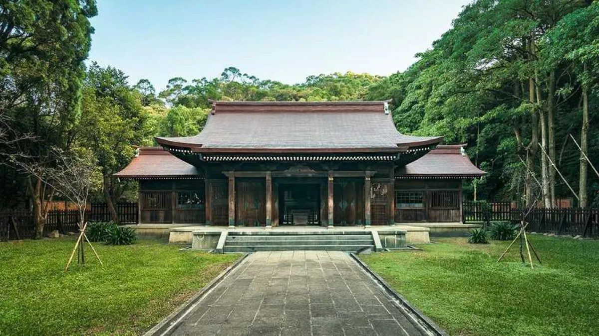
從虎茅莊到桃園
1726 年入墾、1747 年改稱桃仔園、1938 年神社、2014 年升格直轄市。
了解更多 →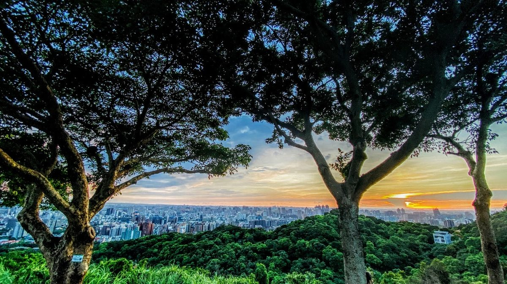
神社、虎頭山與公園
忠烈祠、虎頭山公園、孔廟、景福宮、77 藝文町、展演中心、環保公園、風禾公園。
了解更多 →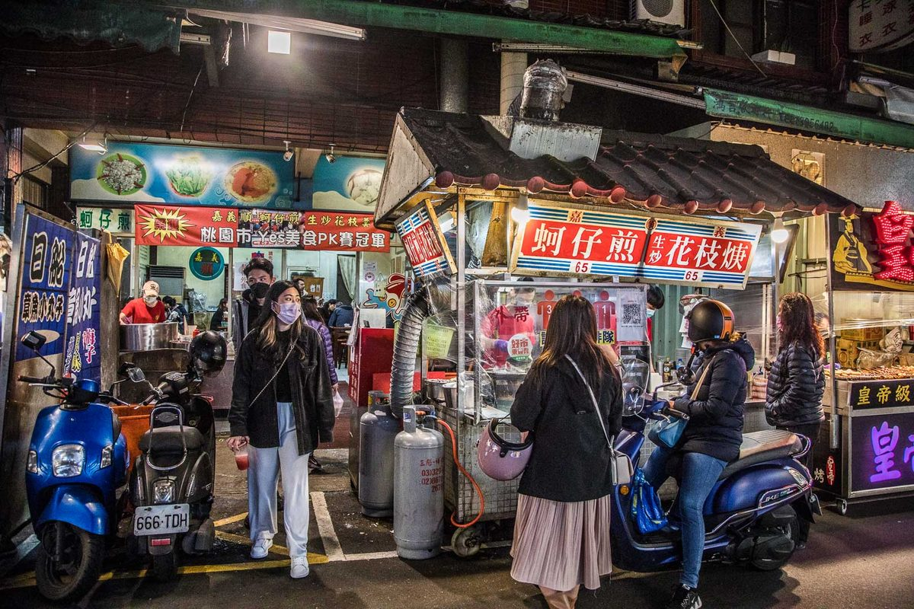
夜市與市場的庶民味
蚵仔煎、花枝羹、鍋貼、米粉湯、切仔麵，南門市場與桃園觀光夜市。
了解更多 →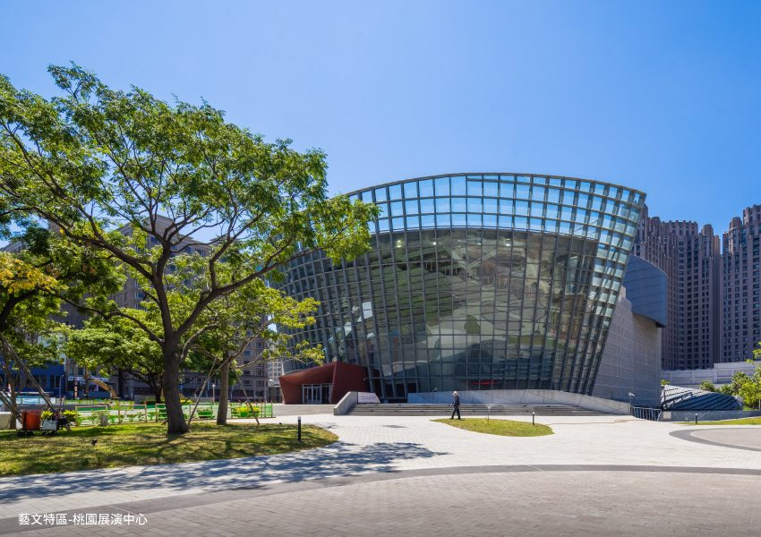
全市人口最多的一區
青壯年近七成，性別比 92.16，1951 年 4.2 萬人成長到 2026 年 47.8 萬人。
了解更多 →文化歷史 — 認識桃園的發展軌跡
從凱達格蘭族龜崙社、南崁社領地，到漢人入墾、草店街市形成，再到今日的桃園市中心。
歷史沿革
1726 年漳州人藍勇入墾虎茅莊（茅草如虎傷人），1737 年粵籍薛啟隆大規模入墾，遍植桃樹，1747 年改稱桃仔園，1888 年魚鱗圖冊登載為「桃園」。閩粵移民、龜崙社交易、草店街市，逐漸形成以景福宮為中心的舊市街。
地方文化特色：景福宮開漳聖王信仰、土地公稱「伯公」、客家與閩南混居、廟埕生活、大廟周邊商圈、孔廟釋奠與孔子文化節、神社轉忠烈祠的歷史轉折。
時間軸
文化資產
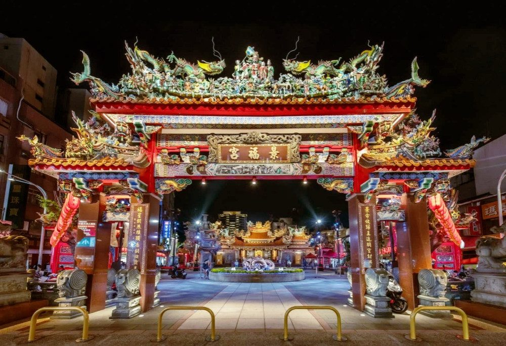
景福宮（大廟）
1745 草創、1813 竣工，主祀開漳聖王，假四垂屋頂、螭虎栱聞名。
桃園神社／忠烈祠
1938 年，全台保存最完整神社，本殿、拜殿、參道、鳥居俱存。
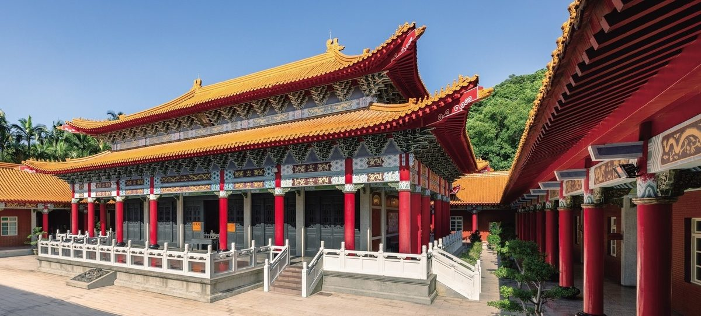
桃園孔廟
1989 落成，全台最年輕孔廟，釋奠典禮與文化體驗。
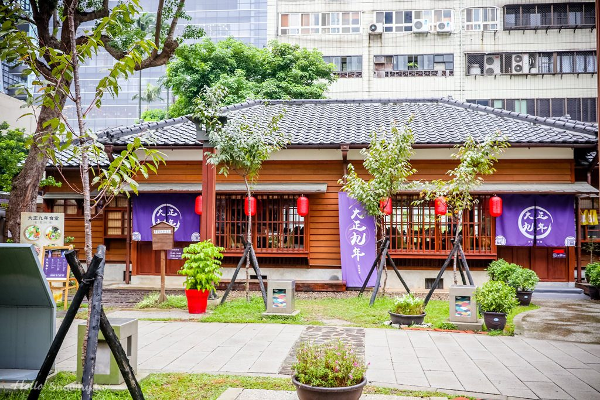
桃園77藝文町
日治警察宿舍群活化，日式木造＋展覽＋餐飲。
知名景點 — 探索桃園的城市風景
點下面分類可以即時篩選卡片。
桃園忠烈祠暨神社文化園區
位置：成功路三段200號
日本境外保存最完整神社，參道、鳥居、本殿俱存。最能一次看懂日治到戰後歷史轉折。
虎頭山公園
位置：會稽區虎頭山
36 公頃，步道、奧爾森林學堂、芬多精。在地人從小玩到大的後花園。
桃園市孔廟
位置：公園路
1989 落成，全台最年輕孔廟，釋奠典禮與文化體驗，宮廷感建築。
景福宮（大廟）
位置：中正路208號
1745 草創，桃園信仰中心與舊市街原點。看螭虎栱與假四垂屋頂必訪。
桃園77藝文町
位置：中正路77巷
日治警察宿舍活化，日式木造＋展覽＋餐飲。漫遊城市裡的日式印象。
桃園展演中心・藝文特區
位置：同德六街
藝文展演、圖書總館、異國美食商圈。晚上散步、看展、吃飯一次滿足。
虎頭山環保公園
位置：虎頭山
舊掩埋場復育，2.5 公頃，360 度觀景平台。免費看大桃園夕陽與夜景。
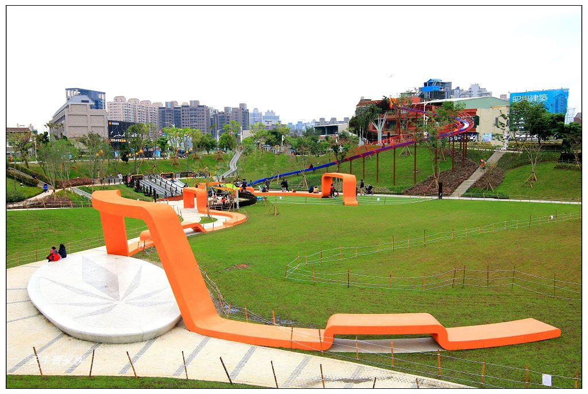
風禾公園
位置：中路重劃區
防災公園，沖繩風滾輪溜滑梯、沙坑、草坪。親子野餐、放電首選。
食物特色 — 品味桃園的在地美食
大廟與市場養出的庶民味、閩南＋客家＋外省＋新住民與異國料理交會。南門市場早餐街、桃園觀光夜市從景福宮周邊發源，1988 年遷至北埔路現址，200 多攤。
嘉義順蚵仔煎
蚵仔＋蛋＋青菜＋太白粉漿，三色醬。夜市 35 年老攤，桃園夜市代表。
生炒花枝羹
花枝＋筍絲＋羹湯，現炒鑊氣。與蚵仔煎同為夜市雙寶（同攤）。
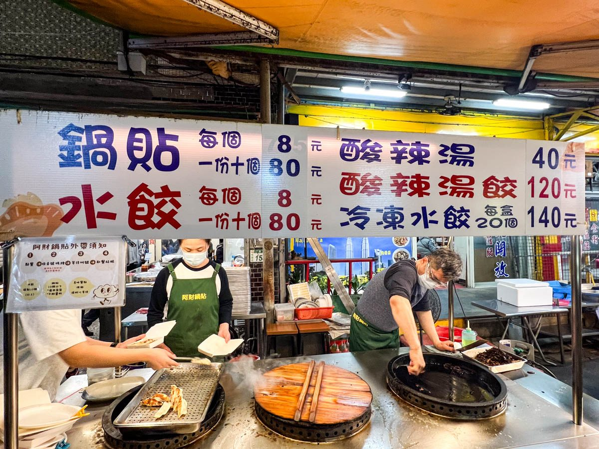
阿財鍋貼
豬肉＋高麗菜，底部煎至金黃酥脆。「煎不脆不賣」的夜市老牌。
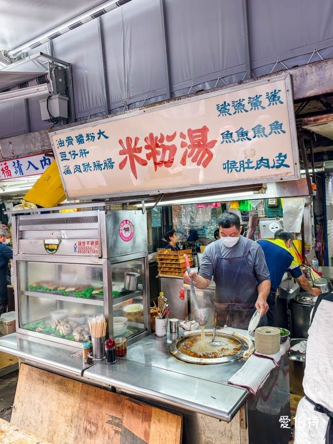
南門市場米粉湯
粗米粉＋大骨高湯＋韭菜油蔥酥，配黑白切。婆婆媽媽買菜後的早餐儀式。
大廟口切仔麵・黑白切
油麵＋豬油＋油蔥，嘴邊肉、豬心等黑白切。大廟口庶民麵攤文化（市場麵攤示意）。
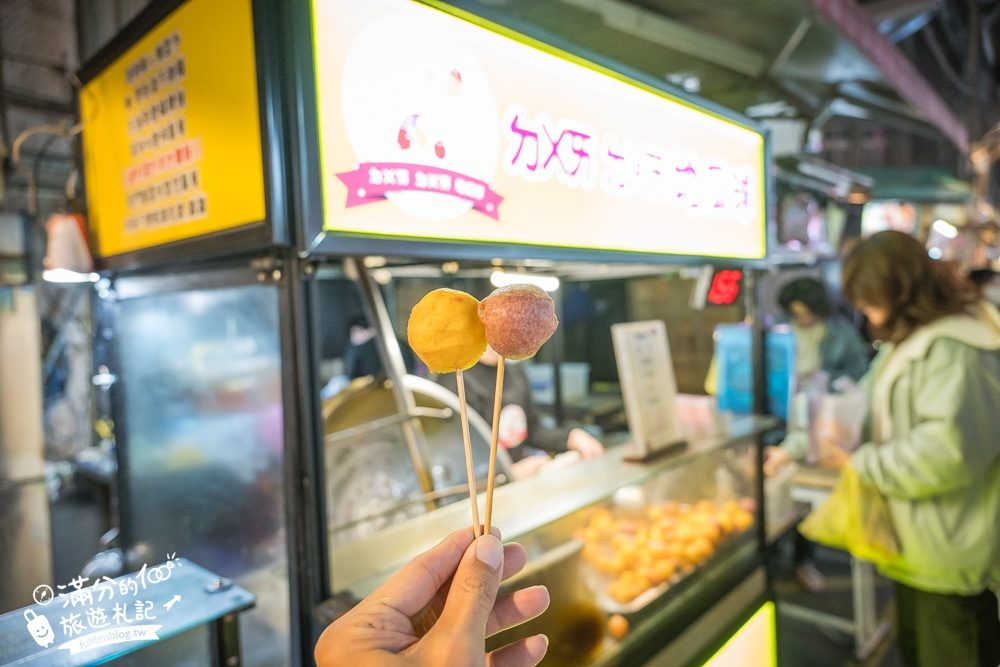
桃園觀光夜市巡禮
蚵仔煎、花枝羹、鍋貼、地瓜球、愛玉、異國料理。全長約 3 公里、200 多攤。
市場與商圈
南門市場：中山路／南華街，早市、文化街早餐一條街：水煎包、廣東腸粉、米粉湯。
東門市場：現代化美食街。
桃園觀光夜市：北埔路、正康二街，17:00 起。
提醒：南門市場曾於 2025 年火災後復原整建，出發前留意現場公告。
人口結構 — 認識桃園區的人口發展
男女比（2025 年底）
男約 22.9 萬（47.9%）、女約 24.9 萬（52.1%），性別比 92.16（女=100）。來源：民政局／戶政事務所 2025 年底。
三組年齡比例（2025 年底）
青壯年近七成，顯示就業與移入磁吸力強；幼年 13.62% 仍相對年輕，但老年已逾 16%，需同時顧及托育與高齡照顧。
五歲年齡組人口（109 年底・2020 年底，總計 457,245 人）
滑鼠移到長條上可看人數。來源：桃園區戶政事務所 109 年底。
歷史人口折線圖
1951 年 42,793 → 1971 年 113,021 → 2001 年 338,361 → 2021 年 458,847 → 2025 年底約 478,000，持續成長。
註：詳細分齡為 109 年底戶政統計，三組比例與性別比為 2025 年底統計，總人口為 2026 年 7 月統計。
資料來源
桃園市政府民政局、桃園區戶政事務所、內政部戶政司、桃園區公所、桃園觀光導覽網。